Full-screen version
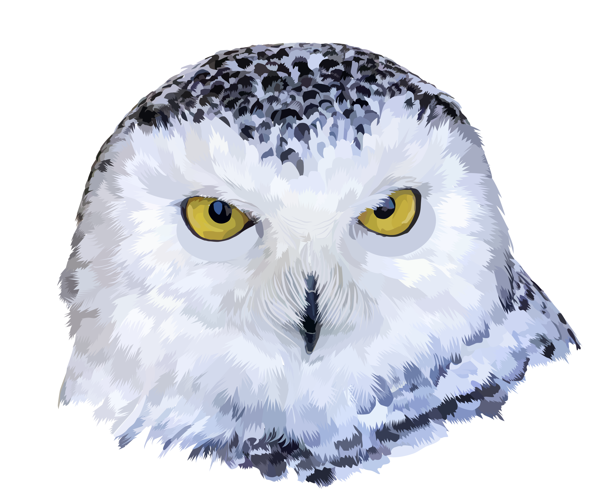North American Snowy Owls
Made famous through J.K. Rowling's Harry Potter series of fantasy novels, one particular feathered character named Hedwig is a Snowy Owl that has brought not only Snowy Owls but all of Owlkind into the forefront of public consciousness. Following the immense popularity of Rowling's books, the series was made into several full-length feature films. Interestingly enough, one of the owl actors portraying Hedwig happened to be the very first cast member to be chosen!
Like the rest of Owlkind, Snowy Owls are undoubtedly beautiful and majestic creatures. The majority of Owlkind are nocturnal and are often very difficult to study and photograph in the wild. Snowy Owls distinguish themselves by being one of the few kinds of diurnal owls. The diurnality of Snowy Owls is taken to the extreme as they will continously hunt during the extended daylight hours of Arctic summers. This can make observing Snowy Owls a bit easier if you can manage a summer vacation north of the Arctic Circle.
Thanks to the work of avid birdwatchers, scientists, and volunteers, observational data has been catalogued for well over a century. One broad dataset maintained by eBird.org currently contains 211,619 lines of observations and includes historical data from 6 January 1862 to 31 October 2021, as well as habitat range spatial data. Though this dataset is large, it has some limitations, such as the potential for multiple observational data of the same bird in a similar location. It is also limited to areas where people make observations. For example, there are no data points within the interior glacial fields of Greenland. Furthermore, the data hardly indicates a significant presence of Snowy Owls in prime Snowy Owl real estate locations such as Siberia. This is likely due to a lack of reporting rather than a lack of Snowy Owls in the region.
Datasets from studies employing GPS tracking of specific individual birds can provide information on where, when, and the routes Snowy Owls travel, as well as how long they stay in a particular area. One such study used here is maintained at Movebank.org in coordination with the Max Planck Institute of Animal Behavior (Germany), the North Carolina Museum of Natural Sciences (USA), and the University of Konstanz (Germany). This type of data is particularly useful because, despite the lack of human observational data, the GPS data shows that Snowy Owls do indeed traverse Greenland's interior with regularity. Additionally, I used the March 2014 data set for Sea Ice Extent to illustrate that Snowy Owls weren't just "hanging out over the water" (based on GPS tracking data) but were probably on an ice floe doing whatever Snowy Owls do on ice floes—which is probably eating—since they go about making Snowy Owlets in the summer almost as far north as possible.
All of the aforementioned datasets can be further analysed through the use of data visualisation software. Here, I make use of a freely available and open-source Geospatial Information System (GIS) software called QGIS to analyse and integrate various data, as well as create maps and other data visualisation. I also make use of MapBox.com's web-based mapping service to build the interactive map seen at the top of the page.
The static maps below make it readily apparent that Snowy Owls occupy a vast range that varies with season and are immensely capable of migrating over great distances with multiple sightings in places such as Burmuda and Florida. In fact, in 2011 a Snowy Owl flew all the way to Hawaii!
(below) Small-scale map of the Snowy Owl observed range. 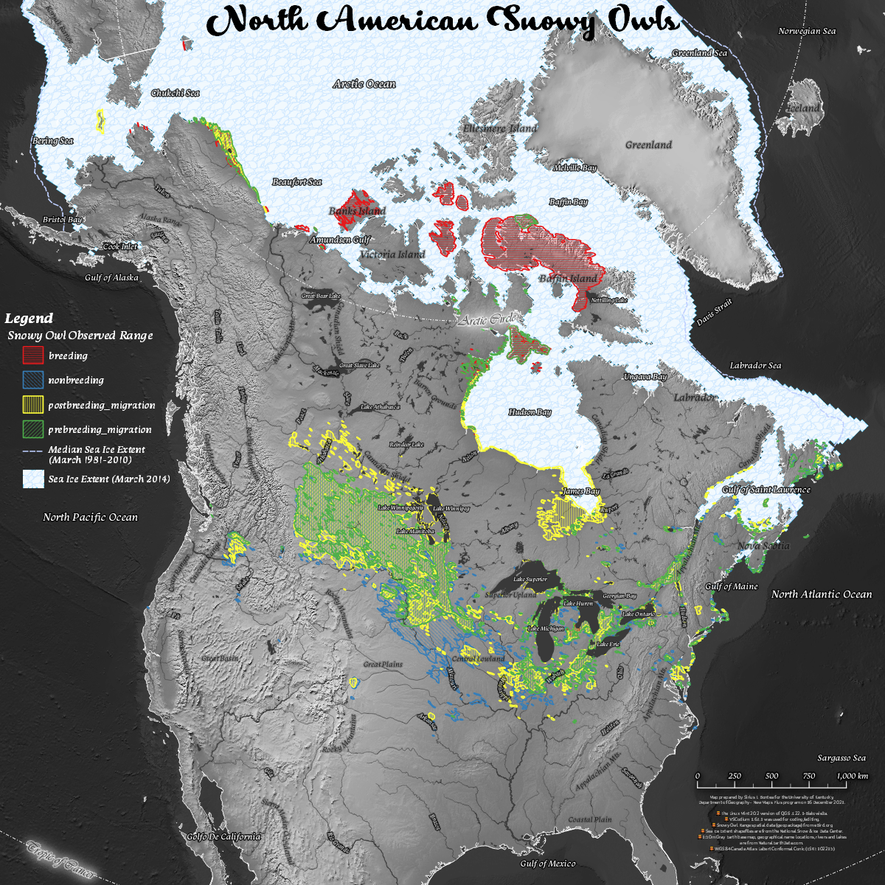Link to high-resolution version.
{kind=link}
(below) Small-scale map of the Snowy Owl predicted range. 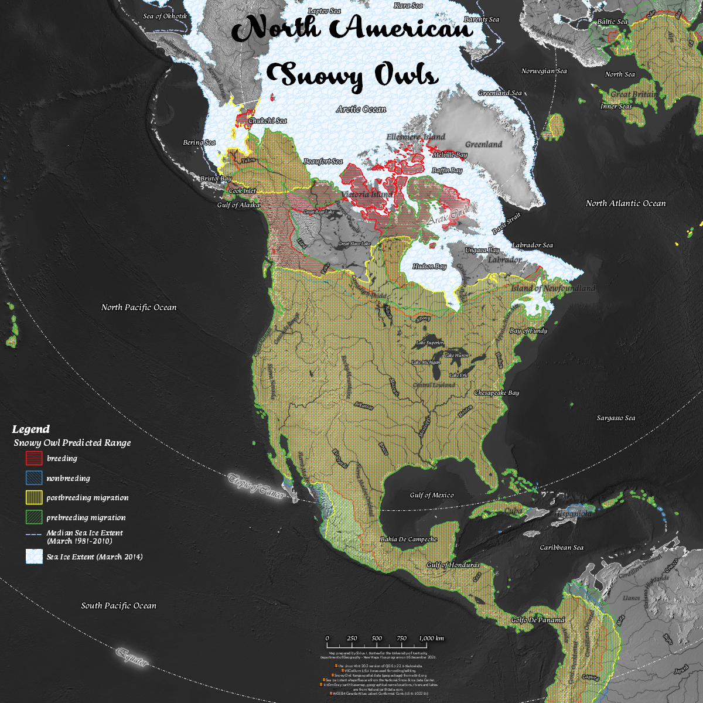
Link to high-resolution version.
{kind=link}
(below) Small-scale map of the Snowy Owl - North America GPS study tracking 33 individual Snowy Owls from 2007 to 2016. 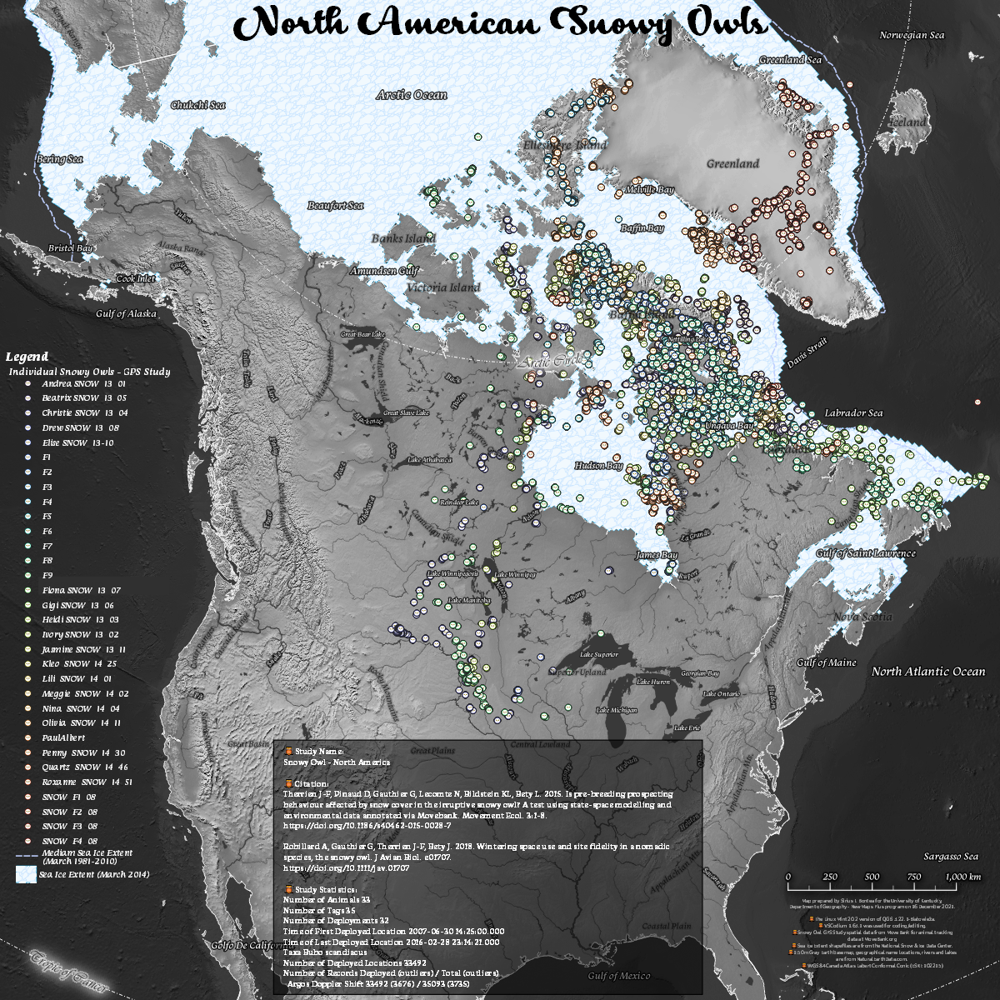
Link to high-resolution version.
{kind=link}
(below) Small-scale map of the Snowy Owl observation data from eBird.org (current as of 15 December 2021). This data set contains 211,619 lines of observations and includes historical data from 6 January 1862 to 31 October 2021.
. This data set contains 211,619 lines of observations and includes historical data from 6 January 1862 to 31 October 2021.")
Link to high-resolution version.
{kind=link}
Tools, citations, and methodology used in this project:
- Data accessed 16 December 2021.
- The Linux Mint 20.2 version of QGIS 3.22.1-Białowieża was used to create static maps.
- A customized Scalable Vector Graphic (SVG) of a Snowy Owl icon was created by modifying Adobe Stock graphic #245954980 in Inkscape 1.1.1 for use within QGIS and Mapbox.
- VSCodium 1.63.1 was used for coding/editing.
- GitKraken 8.2.0 used to interact with GitHub.
- Data is shown on Mapbox web map with geolocation services enabled.
- Snowy Owl location and migration path data comes from Movebank.org in coordination with the Max Planck Institute of Animal Behavior, the North Carolina Museum of Natural Sciences, and the University of Konstanz.
- Snowy Owl range spatial data (tabular or geopackage) is made available at eBird.org.
- 1:50m Gray Earth basemap, geographical name locations, rivers and lakes are from NaturalEarthData.com.
- Sea Ice Extent shapefiles are from the National Snow & Ice Data Center.
- The projected coordinate reference systems used in the static maps is the WGS 84 Canada Atlas Labert Conformal Conic (ESRI: 102215) and WGS 84 Canada Polar Stereographic (EPSG: 5937).
- This site is strictly for non-commercial use. Stock photos with open licencing was used as much as possible and are for illustrative and educational purposes with attribution and links to the original sources as applicable. If I have (inadvertently) violated Intellectual Property Rights, please let me know and I'll get it fixed!
{kind=link}
Project assets:
- Point locations and migration tracks of named Snowy Owls in the GPS study is available here (GeoJSON).
- Point locations historical observational data of Snowy Owls is available here (GeoJSON).
- Snow Owl predicted range data derived from eBird.org is available here (GeoJSON).
- Snowy Owl observed range data derived from eBird.org is available here (GeoJSON).
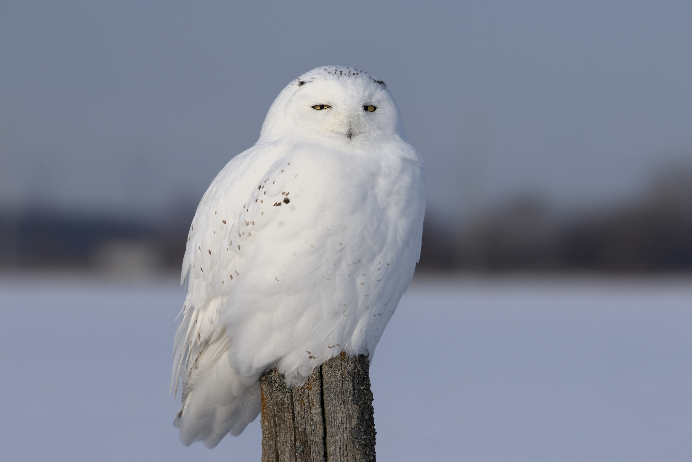
(below) Male Snowy owl (Bubo scandiacus) flies low hunting over an open sunny snowy cornfield in Ottawa, Canada. ©Jim Cumming - Adobe stock photo #240250191.
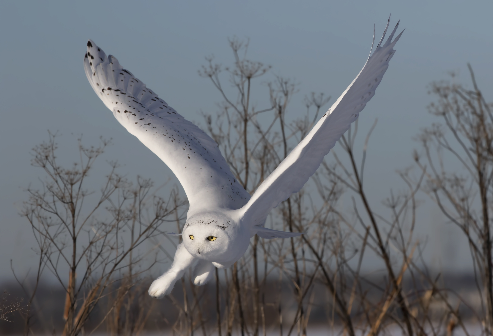
(below) Wise looking white snowy Owl with big orange eyes portrait, black background, close up head shot. ©Tadej - Adobe stock photo #265113262.

(below) Male Snowy owl (Bubo scandiacus) flies low hunting over an open sunny snowy cornfield in Ottawa, Canada. ©Jim Cumming - Adobe stock photo #239834708.
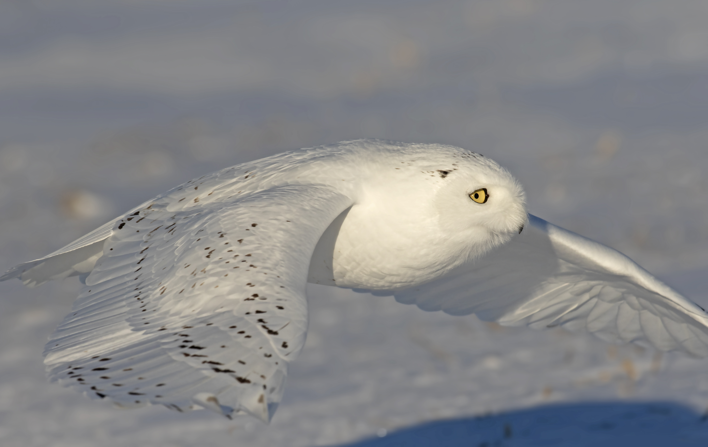
(below) Snowy owl, Nyctea scandiaca, white rare bird flying in the dark forest, winter action scene with open wings, Canada. ©ondrejprosicky - Adobe stock photo #109767899.
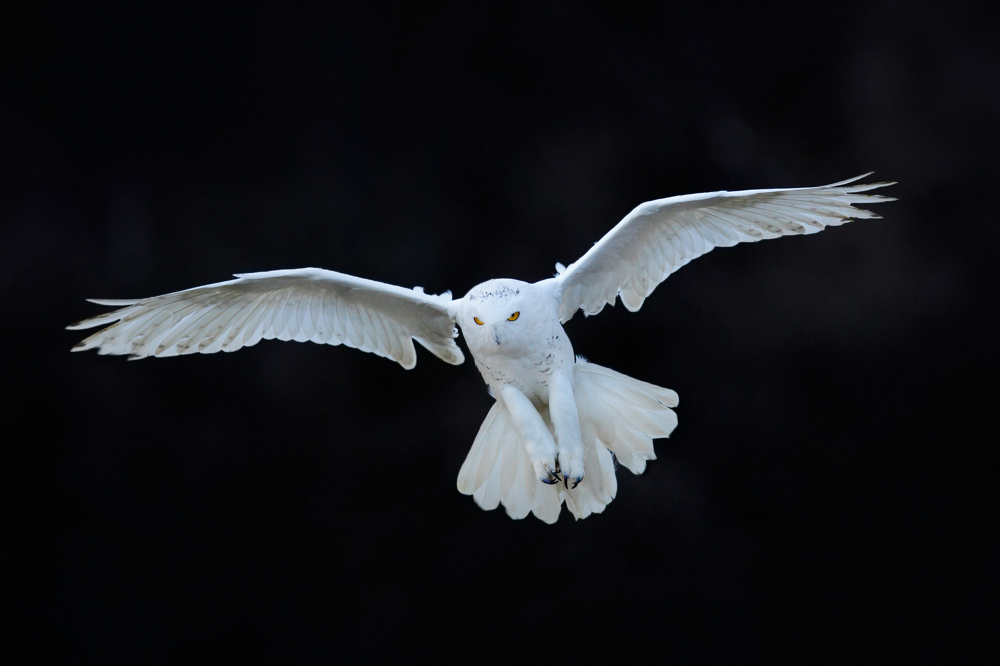
(below) Wise looking white snowy Owl with big orange eyes portrait, black background, close up head shot. ©Tadej - Adobe stock photo #164899662.
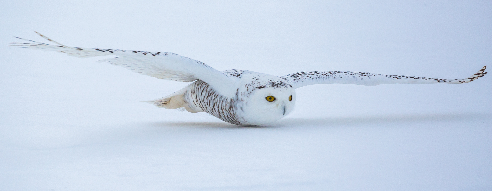
(below) Portrait of male snowy owl (Bubo scandiacus). ©Christian_MUSAT - Adobe stock photo #459457237.
 flies low hunting over an open sunny snowy cornfield in Ottawa, Canada. ©Christian_MUSAT - Adobe stock photo #459457237")
(below) Male Snowy owl (Bubo scandiacus) flies low hunting over an open sunny snowy cornfield in Ottawa, Canada. ©Jim Cumming - Adobe stock photo #238547054.
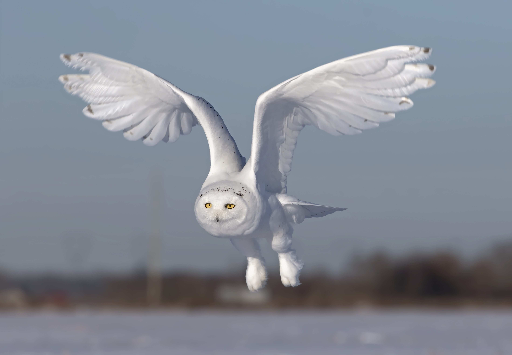
(below) Snowy owl (Bubo scandiacus) prepares to land in the snow in Ottawa, Canada. ©Jim Cumming - Adobe stock photo #330962578.
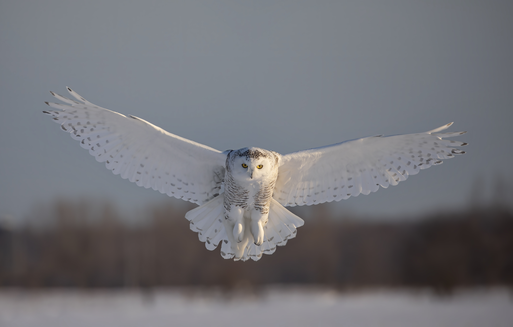
Connect with me on LinkedIn:
Stay tuned for some interesting projects as I apply new skills gained from the New Maps Plus!
Updated on 18 December 2021.
About the author: